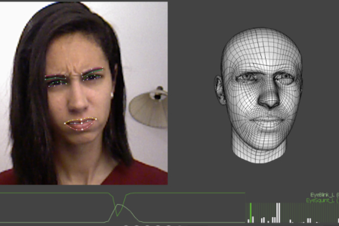

3Deception
Deceptive Information Detection through Computer Vision Analysis of Facial Micro-Expressions from Depth Video Stream

Why detect lies?
Better understanding and control over situations
Take intelligent informed actions
Identify untrustworthy personnel
Our solution
Subject-tailored classifier
Portable, quickly deployed solution
Machine Learning eliminates human bias
Computer vision eliminates physical contact